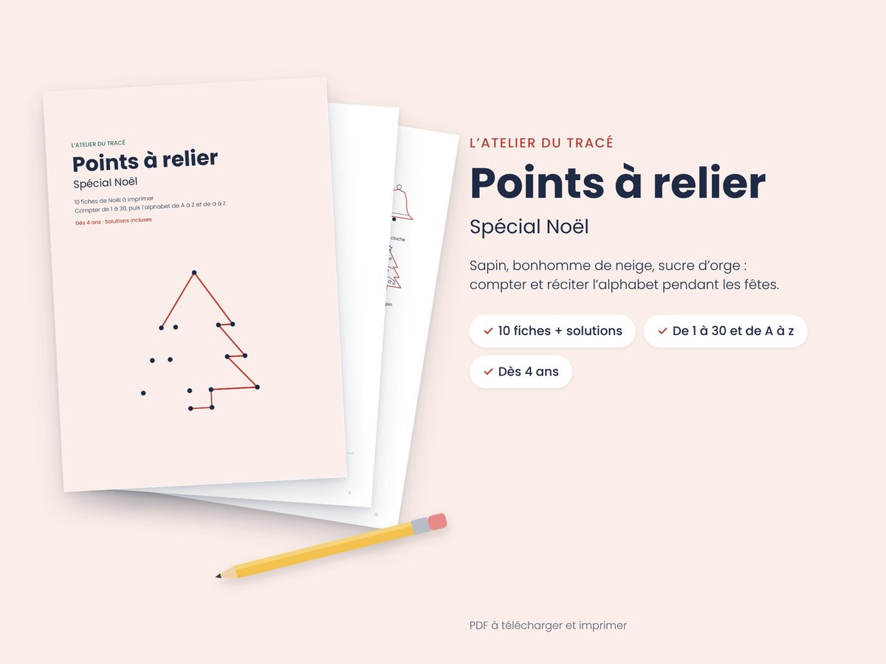

Enfants dès 3 ans
Graphisme · Les tracés de base
10 fiches illustrées pour préparer la main à l’écriture : pluie, vagues, ponts, boucles. Diplôme inclus.
Pour les enfants
Préparer la main à l’écriture, compter, réciter l’alphabet, puis colorier : des activités calmes qui font travailler la main.
10 fiches illustrées pour préparer la main à l’écriture : pluie, vagues, ponts, boucles. Diplôme inclus.

19 fiches de 1 à 10 jusqu’à 1 à 50, puis l’alphabet en majuscules et en minuscules. Solutions incluses.

10 fiches de Noël pour compter de 1 à 30 et réviser l’alphabet. Dessins originaux, solutions incluses.

Les pages offertes contiennent une fiche de graphisme et deux fiches de points à relier, à imprimer tout de suite.
Après le paiement sur Payhip, vous recevez un e-mail avec un lien de téléchargement. Le fichier est un PDF que vous gardez.
Oui, autant de fois que vous voulez pour votre usage personnel, familial ou pour votre classe.
Une imprimante, du papier A4 et un crayon. Pour l’écriture, un crayon à papier ou un stylo qui glisse bien est idéal.
Non. Ce sont des supports d’entraînement. En cas de difficulté importante, un orthophoniste, un graphothérapeute ou un formateur en alphabétisation reste la bonne personne à consulter.